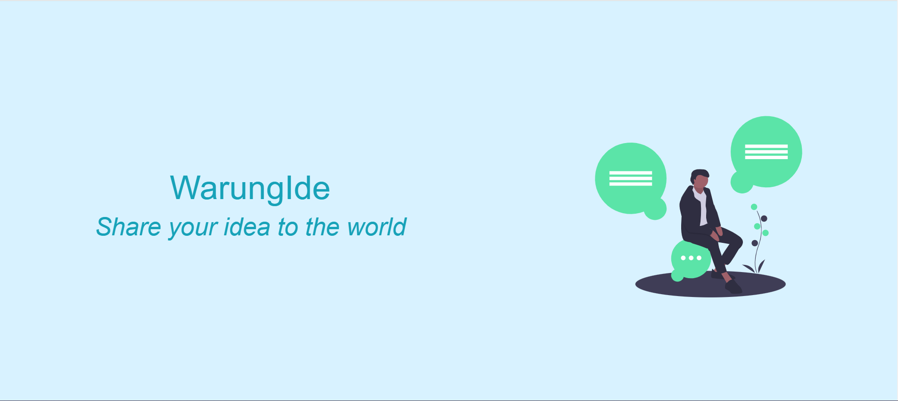

Apa Itu WarungIdea
WarungIdea adalah media platform situs penggalangan dana berbasis Ide, Wujudkan Ide kamu dengan membuat kampanye, promosikan dan kumpulkan dana untuk kampanyemu, dan wujudkan kampanye tersebut bersama WarungIdea.
WarungIdea merupakan platform yang diharapkan akan membantu penggunanya untuk terus berkarya dan mewujudkan karyanya secara Kolektif yaitu melalui penggalangan dana secara bersama - sama, dengan menggunakan WarungIdea, fitur yang telah dikembangkan khusus dibangun untuk membantu para kreator dan donatur agar bisa dapat mewujudkan Idenya sebaik mungkin.
Goals
Bisnis Lebih Cepat Dikenal Luas, Memikat Investor Potensial, Proses Pengajuan yang Mudah, Dapat Menentukan Sistem Crowdfunding dan Mengurangi Kompetisi Antar Kreator serta Membangun Basis Konsumen.
Feature
Fitur yang diberikan untuk pengguna dari warungidea.com adalah Layanan e-collaboration dengan kreator atau user lain yang terintegrasi
- E-collaboration dan private chat user dan kreator
- Midtrans Payment Gateway, pembayaran terasa lebih mudah
- Layanan Email dan Telepon untuk masalah pembayaran